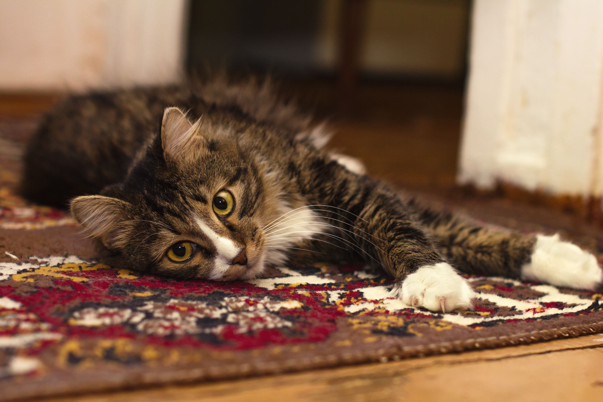
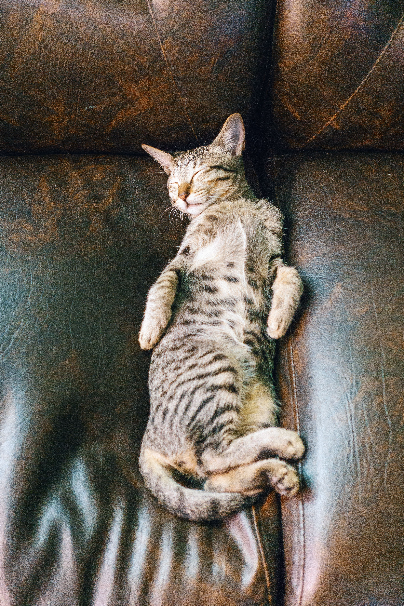
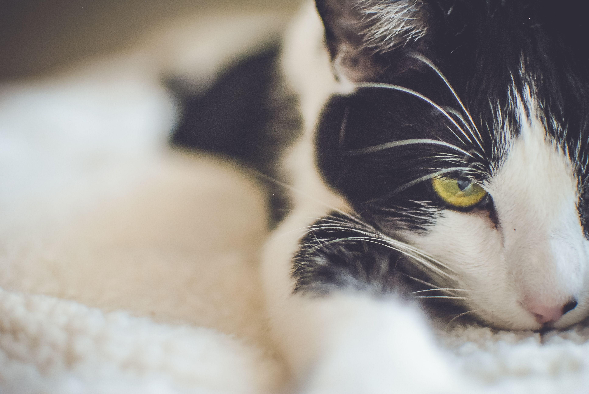
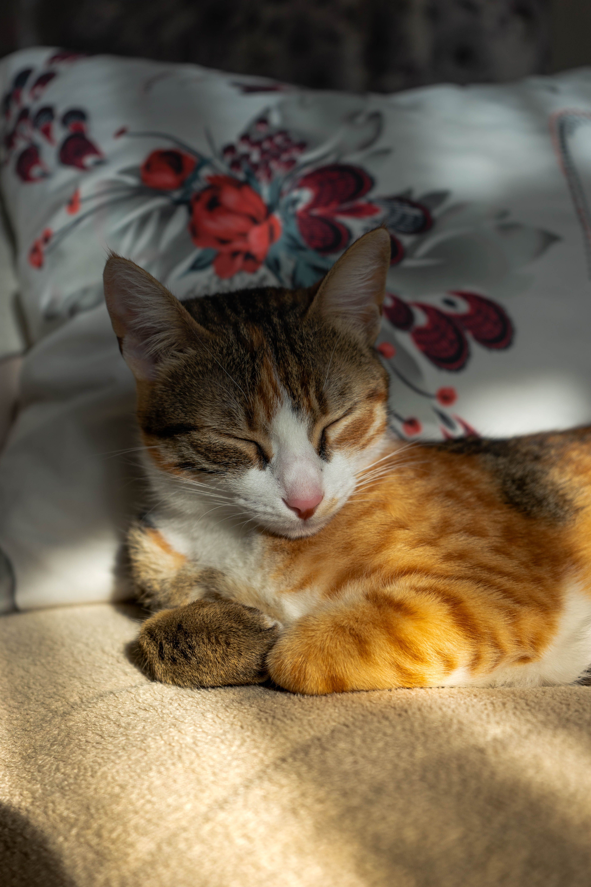
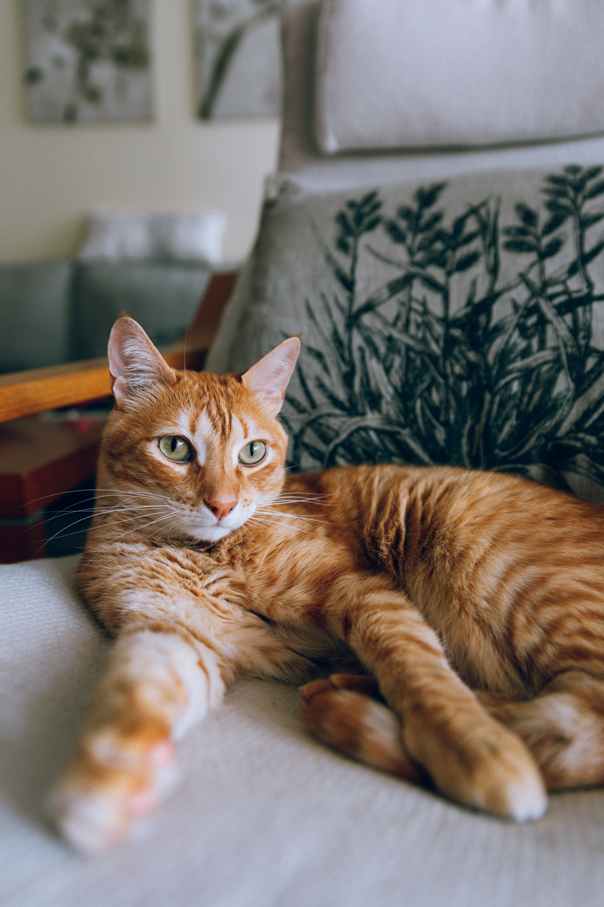
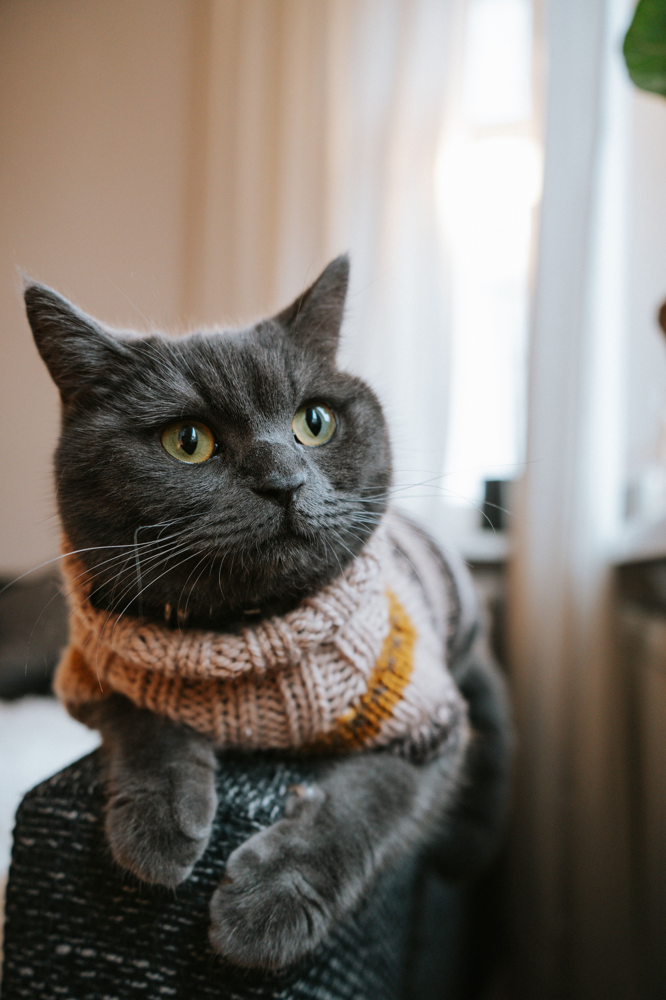
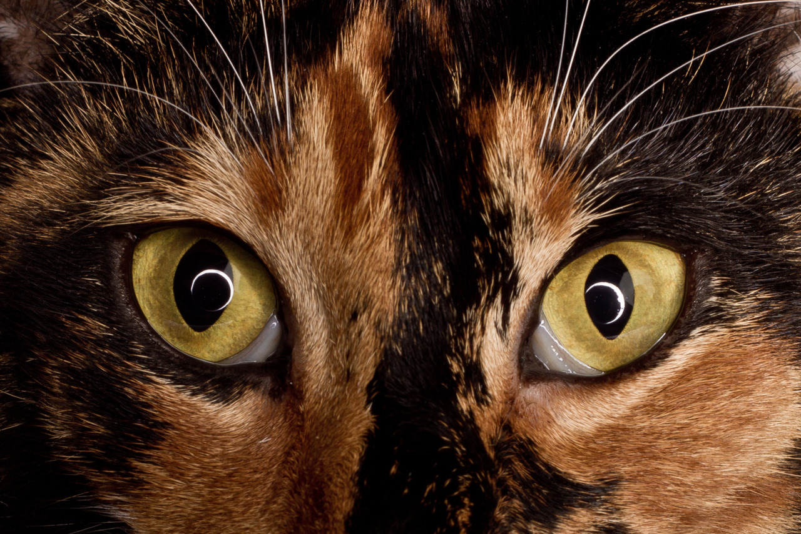
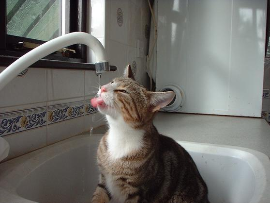

An AI partner inside the engineering workflow

Praneet Koppula
Product design leadership · Expert engineering tools · AI design experiments

18+
Years in design
120
Products in governance ecosystem
4
Countries in leadership context
What I do
Complex software should feel clear enough to trust.
I lead design teams and stay close to the work, making expert-level engineering tools and AI-assisted workflows intuitive without hiding the complexity that makes them powerful.
Make state visibleUsers should understand what the system knows, changed, and needs from them.
Earn trust through controlPreview, confirmation, correction, and recovery matter more than artificial certainty.
Scale judgment, not samenessStandards should raise quality while preserving room for the problem to shape the solution.
Selected Work
AI & Interaction

🤖
→

🔍
Making complex model behavior inspectable
→
🔧
Making Simulink diagnostics actionable
→
Design Systems & Quality

📐
Scaling task-based UI design across engineering apps
→

🖌️
Reimagining Mask Editor as a technical authoring environment
→

📋
Turning design judgment into a team capability
→
Leadership
Field Research (HFI)

🏫
Designing a classroom computer as a classroom system
→

💰
Designing mobile money from household financial life
→

🗺️
Researching urban wayfinding in the field
→
Experiments
Writing
Closed-Loop Experience Design
A four-part essay tracing an idea from designing beside a developer in 2014 to building with coding agents — and how the same relationship could help designers shape physical system behavior.
→